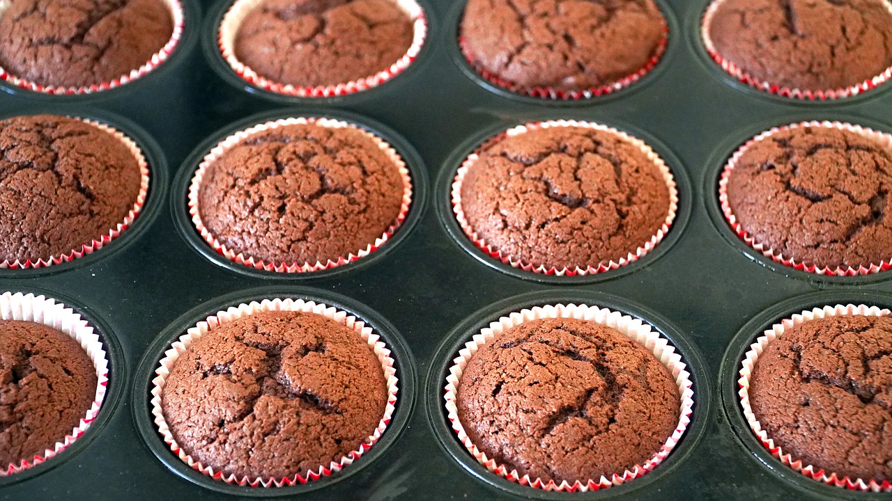

Step 1: Ingredients
Have ingredients prepped and ready before you start mixing

- 1/2 cup unsalted butter, soften and cubed
- 1 1/2 cups white sugar
- 2 eggs
- 1 teaspoon vanilla extract
- 1 1/2 cups all purpose flour
- 1/2 cup unsweetened cocoa powder
- 1 teaspoon baking soda
- 1/2 teaspoon fine sea salt
- 1/2 cup buttermilk
- 1/2 cup room temperature water
Step 2: Prep your pans and tools
Before you start baking, make sure you have the correct equipment

- 2 - 12 cup muffin tins filled with paper liners
- 2 - medium size mixing bowls
- Standing kitchen mixer with paddle attachment
- Liquid measuring cup
- Whisk
- Spatula
- Measuring cups and measuring spoons
- Spring-loaded scoop
- Cooling grid
Step 3: Directions
Start your baking oven and let's mix

- Pre-heat oven to 375 degrees F
- In a medium bowl, add 1 1/2 cups all purpose flour, 1/2 cup unsweetened cocoa powder, 1 teaspoon baking soda, and 1/2 teaspoon salt. Using a whisk, mix the dry ingredients together until it is lump-free. Set aside
- In a standing kitchen mixer, cream together 1/2 cup unsalted butter and 1 1/2 cup white sugar until light and fluffy. This will take 8-12 minutes on medium speed
- In a medium bowl, whisk together 2 eggs and 1 teaspoon vanilla extract. Slowly pour this into the butter-sugar mixture while it is mixing on low speed. Stop the mixer, scrape the sides and paddle attachment with a spatula. Make sure it is uniform!
- In a liquid measuring cup, add 1/2 cup buttermilk and 1/2 cup water. Whisk until combined
- Start the mixer back on low speed, add the dry ingredients alternately with the buttermilk and water mixture
- Stop mixer and scrape down the bowl sides and attachment with a spatula. Stir to ensure the batter is unfiorm
- Using a scoop (or a measuring cup if you do not have one), fill the muffin tins 2/3 fill
- Bake, in oven, for 20 minutes. Rotating the pan half way after 10 minutes
- To ensure it is done baking, insert a tooth pick or paring knife into one of the cupcakes. If it come out clean, it is done. If it does not, bake for 5 more minutes and test again
Step 4: Cool and prep frosting
Let the cupcakes cool

- Place the muffin tins on a cooling grid, or heat safe surface
- Let it completely cool to room temperature. This will take 2-3 hours
- Prep your favorite frosting recipe while the cupcakes are cooling
- Below is an easy frosting recipe for beginners
Easy American Frosting Recipe:
- 1/2 cup unsalted butter, soften and cubed
- 3 1/2 cups powdered sugar, sifted
- 2 oz unsweetened chocolated, melted
- 2 tablespoons milk, your choice
- 1 teaspoon vanilla extract
- pinch of fine sea salt
Combine all ingredients in a standing kitchen mixer with the paddle attachment. Mix on low speed until smooth, 5-8 minutes. Stop and scrape down with a spatula. Mix again for 5 minutes on medium speed.
Step 5: Decorate
Garnish the cupcakes

- After the cupcakes have cooled, using an offset spatula to frost the cupcakes
- Top with your favorite cupcake decorations
- Popular options: Use rainbow sprinkles, chopped chocolate or nuts
- Share and enjoy!